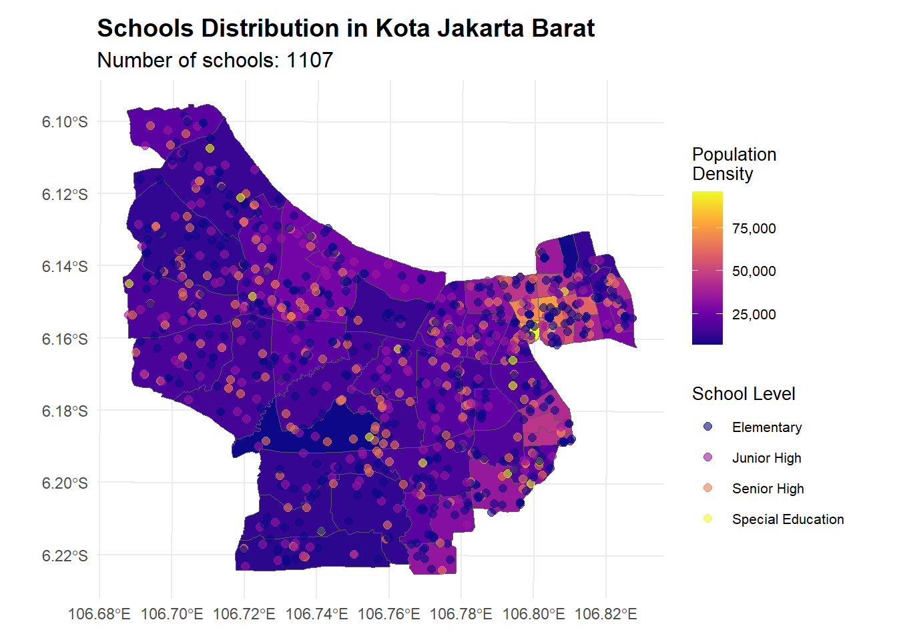
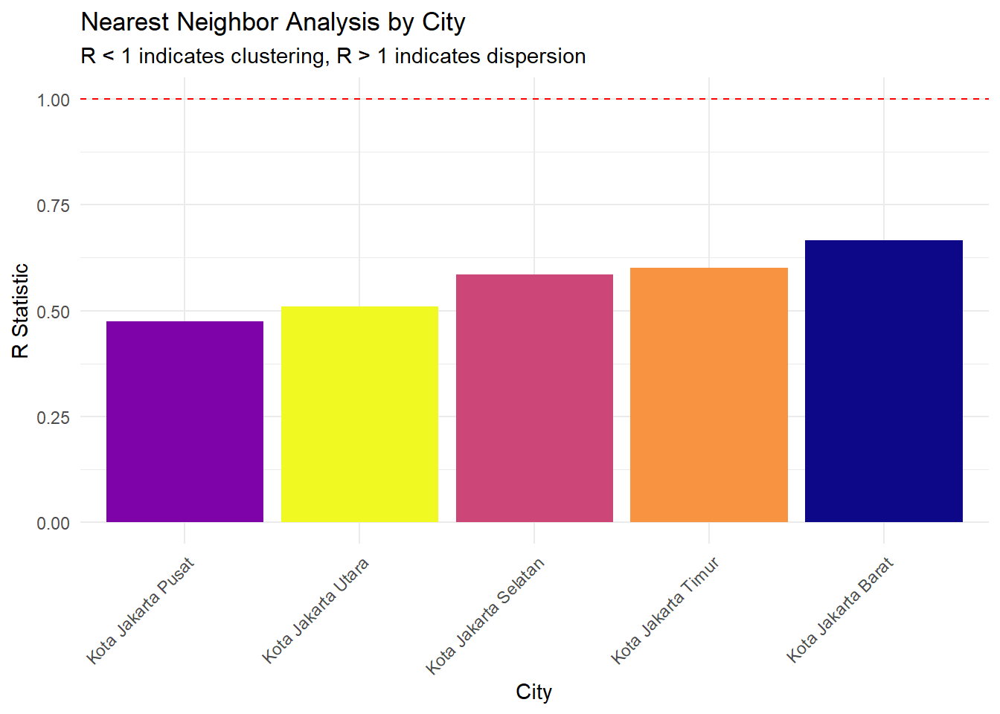
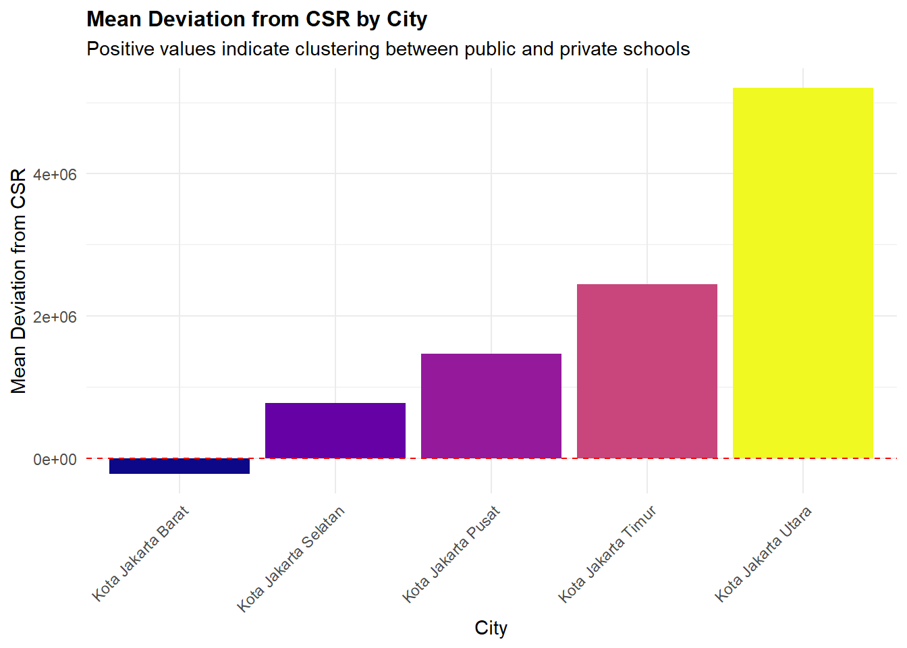

pacman::p_load(sf, tidyverse, knitr, viridis, patchwork, gridExtra, kableExtra, sfdep, tmap, tmaptools, patchwork, scales, spdep, ggrepel, spatstat)Take Home Exercise 3
1.0 Geospatial Analysis of Jakarta Schools
1.1 Overview
1.2 Significance and Impact
1.3 Research Focus
1.4 Datasets
2.0 Data Preprocessing
indo_schools_kaggle <- read_csv("data/aspatial/complete_data.csv")Rows: 215371 Columns: 11
── Column specification ────────────────────────────────────────────────────────
Delimiter: ","
chr (6): province_name, city_name, district_name, school_name, stage, status
dbl (5): lat, long, province_area, total_population, total_education_age_pop...
ℹ Use `spec()` to retrieve the full column specification for this data.
ℹ Specify the column types or set `show_col_types = FALSE` to quiet this message.jakarta_schools <- indo_schools_kaggle %>%
filter(province_name == "DKI JAKARTA",
city_name != "Kab. Kepulauan Seribu") %>%
filter(!is.na(long) & !is.na(lat)) %>%
st_as_sf(coords = c("long", "lat"), crs = 4326) %>%
mutate(
school_level = case_when(
stage %in% c("SD", "SDLB") ~ "Elementary",
stage %in% c("SMP", "SMPLB") ~ "Junior High",
stage %in% c("SMA", "SMK", "SMLB") ~ "Senior High",
TRUE ~ "Special Education"
),
school_type = if_else(status == "N", "Public", "Private")
)head(jakarta_schools)Simple feature collection with 6 features and 11 fields
Geometry type: POINT
Dimension: XY
Bounding box: xmin: 106.8139 ymin: -6.1992 xmax: 106.8642 ymax: -6.1462
Geodetic CRS: WGS 84
# A tibble: 6 × 12
province_name city_name district_name school_name stage status province_area
<chr> <chr> <chr> <chr> <chr> <chr> <dbl>
1 DKI JAKARTA Kota Jakar… Kec. Tanah A… SD NEGERI … SD N 664
2 DKI JAKARTA Kota Jakar… Kec. Senen SDN Kenari… SD N 664
3 DKI JAKARTA Kota Jakar… Kec. Johar B… SD NEGERI … SD N 664
4 DKI JAKARTA Kota Jakar… Kec. Menteng SMAS PSKD … SMA S 664
5 DKI JAKARTA Kota Jakar… Kec. Sawah B… SMKS STRAD… SMK S 664
6 DKI JAKARTA Kota Jakar… Kec. Cempaka… SDN Cempak… SD N 664
# ℹ 5 more variables: total_population <dbl>,
# total_education_age_population <dbl>, geometry <POINT [°]>,
# school_level <chr>, school_type <chr>adm2 <- st_read("data/geospatial", layer = "geoBoundaries-IDN-ADM2_simplified") %>%
filter(shapeName %in% c(
"Kota Jakarta Barat", "Kota Jakarta Pusat",
"Kota Jakarta Selatan", "Kota Jakarta Timur",
"Kota Jakarta Utara"
))Reading layer `geoBoundaries-IDN-ADM2_simplified' from data source
`C:\Users\yeoba\Desktop\bjyeo\IS415-GeospatialAnalytics\TakehomeEx\THE03\data\geospatial'
using driver `ESRI Shapefile'
Simple feature collection with 519 features and 5 fields
Geometry type: MULTIPOLYGON
Dimension: XY
Bounding box: xmin: 95.01115 ymin: -11.00762 xmax: 141.0194 ymax: 6.07693
Geodetic CRS: WGS 84batas <- st_read("data/geospatial", layer = "BATAS_DESA_DESEMBER_2019_DUKCAPIL_DKI_JAKARTA") %>%
select(OBJECT_ID, PROVINSI, KAB_KOTA, KECAMATAN, DESA_KELUR,
JUMLAH_PEN, JUMLAH_KK, LUAS_WILAY, KEPADATAN, geometry) %>%
rename(
province = PROVINSI,
city = KAB_KOTA,
district = KECAMATAN,
subdistrict = DESA_KELUR,
population = JUMLAH_PEN,
total_families = JUMLAH_KK,
area_size = LUAS_WILAY,
popn_density = KEPADATAN
) %>%
filter(!is.na(city) & city != "KEPULAUAN SERIBU") %>%
mutate(city = case_when(
city == "JAKARTA BARAT" ~ "Kota Jakarta Barat",
city == "JAKARTA PUSAT" ~ "Kota Jakarta Pusat",
city == "JAKARTA SELATAN" ~ "Kota Jakarta Selatan",
city == "JAKARTA TIMUR" ~ "Kota Jakarta Timur",
city == "JAKARTA UTARA" ~ "Kota Jakarta Utara",
TRUE ~ city
))Reading layer `BATAS_DESA_DESEMBER_2019_DUKCAPIL_DKI_JAKARTA' from data source
`C:\Users\yeoba\Desktop\bjyeo\IS415-GeospatialAnalytics\TakehomeEx\THE03\data\geospatial'
using driver `ESRI Shapefile'
Simple feature collection with 269 features and 161 fields
Geometry type: MULTIPOLYGON
Dimension: XY
Bounding box: xmin: 106.3831 ymin: -6.370815 xmax: 106.9728 ymax: -5.184322
Geodetic CRS: WGS 84head(batas)Simple feature collection with 6 features and 9 fields
Geometry type: MULTIPOLYGON
Dimension: XY
Bounding box: xmin: 106.8105 ymin: -6.17575 xmax: 106.8711 ymax: -6.141043
Geodetic CRS: WGS 84
OBJECT_ID province city district subdistrict population
1 25477 DKI JAKARTA Kota Jakarta Barat TAMAN SARI KEAGUNGAN 21609
2 25478 DKI JAKARTA Kota Jakarta Barat TAMAN SARI GLODOK 9069
3 25397 DKI JAKARTA Kota Jakarta Pusat KEMAYORAN HARAPAN MULIA 29085
4 25400 DKI JAKARTA Kota Jakarta Pusat KEMAYORAN CEMPAKA BARU 41913
5 25390 DKI JAKARTA Kota Jakarta Pusat SAWAH BESAR PASAR BARU 15793
6 25391 DKI JAKARTA Kota Jakarta Pusat SAWAH BESAR KARANG ANYAR 33383
total_families area_size popn_density geometry
1 7255 0.36 60504 MULTIPOLYGON (((106.8164 -6...
2 3273 0.37 24527 MULTIPOLYGON (((106.8148 -6...
3 9217 0.53 54465 MULTIPOLYGON (((106.8576 -6...
4 13766 0.97 42993 MULTIPOLYGON (((106.8631 -6...
5 5599 1.76 8971 MULTIPOLYGON (((106.8369 -6...
6 11276 0.47 71628 MULTIPOLYGON (((106.8316 -6...district_mapping <- c(
"TAMAN SARI" = "Kec. Taman Sari",
"KEMAYORAN" = "Kec. Kemayoran",
"SAWAH BESAR" = "Kec. Sawah Besar",
"GAMBIR" = "Kec. Gambir",
"SENEN" = "Kec. Senen",
"CEMPAKA PUTIH" = "Kec. Cempaka Putih",
"MENTENG" = "Kec. Menteng",
"TANAH ABANG" = "Kec. Tanah Abang",
"JOHAR BARU" = "Kec. Johar Baru",
"KOJA" = "Kec. Koja",
"PENJARINGAN" = "Kec. Penjaringan",
"TANJUNG PRIOK" = "Kec. Tanjung Priok",
"CILINCING" = "Kec. Cilincing",
"GROGOL PETAMBURAN" = "Kec. Grogol Petamburan",
"PADEMANGAN" = "Kec. Pademangan",
"KELAPA GADING" = "Kec. Kelapa Gading",
"CENGKARENG" = "Kec. Cengkareng",
"TAMBORA" = "Kec. Tambora",
"KEBON JERUK" = "Kec. Kebon Jeruk",
"KALIDERES" = "Kec. Kali Deres",
"PAL MERAH" = "Kec. Palmerah",
"JATINEGARA" = "Kec. Jatinegara",
"KEMBANGAN" = "Kec. Kembangan",
"TEBET" = "Kec. Tebet",
"SETIABUDI" = "Kec. Setia Budi",
"MAMPANG PRAPATAN" = "Kec. Mampang Prapatan",
"PASAR MINGGU" = "Kec. Pasar Minggu",
"KEBAYORAN LAMA" = "Kec. Kebayoran Lama",
"KEBAYORAN BARU" = "Kec. Kebayoran Baru",
"CILANDAK" = "Kec. Cilandak",
"PESANGGRAHAN" = "Kec. Pesanggrahan",
"PANCORAN" = "Kec. Pancoran",
"JAGAKARSA" = "Kec. Jagakarsa",
"MATRAMAN" = "Kec. Matraman",
"PULOGADUNG" = "Kec. Pulo Gadung",
"KRAMATJATI" = "Kec. Kramat Jati",
"PASAR REBO" = "Kec. Pasar Rebo",
"DUREN SAWIT" = "Kec. Duren Sawit",
"MAKASAR" = "Kec. Makasar",
"CIRACAS" = "Kec. Ciracas",
"CIPAYUNG" = "Kec. Cipayung",
"CAKUNG" = "Kec. Cakung"
)
batas <- batas %>%
mutate(district = district_mapping[district])3.0 Exploratory Data Analysis (Provincial Level)
ggplot(data = jakarta_schools) +
geom_bar(aes(x = city_name, fill = city_name)) +
scale_fill_viridis_d(option = "plasma") +
theme_minimal() +
theme(
axis.text.x = element_text(angle = 45, hjust = 1),
plot.title = element_text(size = 12, face = "bold"),
legend.position = "none"
) +
labs(
title = "Distribution of Schools Across Jakarta",
x = "City",
y = "Number of Schools"
)
Key Observations:
- The plot reveals significant disparity in school distribution across Jakarta
- East Jakarta (Timur) has the highest number of schools, followed by West Jakarta (Barat) then South Jakarta (Selatan). This is consistent with the population density distribution in Jakarta.
ggplot(data = jakarta_schools) +
geom_bar(aes(x = city_name, fill = school_level)) +
scale_fill_viridis_d(option = "plasma") +
theme_minimal() +
theme(
axis.text.x = element_text(angle = 45, hjust = 1),
plot.title = element_text(size = 12, face = "bold")
) +
labs(
title = "Distribution of School Levels Across Jakarta",
x = "City",
y = "Number of Schools",
fill = "School Level"
)
Key Observations:
- Across all municipalities, elementary schools are the most common
- There is a relatively consistent proportion of Junior and Senior High Schools
- Special Education schools are less common but present in all municipalities
- While total numbers differ, the proportional distribution of school levels remains fairly consistent across cities, suggesting planned distribution rather than random clustering
ggplot() +
geom_sf(data = adm2, aes(fill = lengths(st_intersects(adm2, jakarta_schools)))) +
scale_fill_viridis_c(option = "plasma") +
theme_minimal() +
labs(
title = "School Density Across Jakarta",
fill = "Number of\nSchools"
)
ggplot() +
geom_sf(data = batas, aes(fill = popn_density)) +
scale_fill_viridis_c(
option = "plasma",
labels = scales::comma_format()
) +
theme_minimal() +
labs(
title = "Population Density in Jakarta",
fill = "Population\nDensity\n(per km²)"
)
Key Observations:
- The density map reveals high population clusters in central Jakarta (yellow/orange areas)
- There is an interesting mismatch with school density in some areas
- Several high-density pockets are scattered across Jakarta
Summary
- Our preliminary EDA at the provincial level is too macro to provide detailed insights, but necessary to understand the overall distribution of schools in Jakarta
- Certain patterns of school and population concentration emerge, but we will need to confirm this with KDE and statistical tests
- We still cannot determine if the school distribution matches population needs
4.0 Kernel Density Estimation (Provincial Level)
4.1 Provincial KDE
# Convert to UTM projection for proper distance calculations
jakarta_schools_utm <- st_transform(jakarta_schools, 32748)
adm2_utm <- st_transform(adm2, 32748)coords <- st_coordinates(jakarta_schools_utm)
jittered_coords <- coords + matrix(
runif(nrow(coords) * 2, -0.1, 0.1),
ncol = 2
)window <- as.owin(st_union(adm2_utm))
inside <- inside.owin(x = jittered_coords[,1],
y = jittered_coords[,2],
w = window)
valid_coords <- jittered_coords[inside,]points <- ppp(
x = valid_coords[,1],
y = valid_coords[,2],
window = window
)
print(paste("Original points:", nrow(coords)))[1] "Original points: 4762"print(paste("Points in window:", sum(inside)))[1] "Points in window: 4734"print(paste("Duplicated points:", sum(duplicated(valid_coords))))[1] "Duplicated points: 0"kde <- density.ppp(points,
sigma = bw.diggle(points),
edge = TRUE)
kde_df <- as.data.frame(kde)ggplot() +
geom_sf(data = adm2_utm, fill = "transparent") +
geom_tile(data = kde_df, aes(x = x, y = y, fill = value)) +
scale_fill_viridis_c(option = "plasma") +
theme_minimal() +
labs(
title = "Kernel Density Estimation of All Schools",
subtitle = paste0("Based on ", sum(inside), " school locations"),
fill = "Density"
)Key Observations:
- The overall KDE map shows spatial clustering with several high-density hotspots
- The strongest concentration is in North-Central Jakarta (around 6.15S)
- Secondary clusters appear in the eastern and western regions
- Southern areas generally show lower density
- This patterns strongly suggests rejecting the null hypothesis of random distribution
4.2 KDE by School Level
# Individual KDE by school level
kde_plots <- list()
# Process each school level
for(level in unique(jakarta_schools_utm$school_level)) {
schools_subset <- jakarta_schools_utm[jakarta_schools_utm$school_level == level,]
coords <- st_coordinates(schools_subset)
jittered_coords <- coords + matrix(
runif(nrow(coords) * 2, -0.1, 0.1),
ncol = 2
)
inside <- inside.owin(x = jittered_coords[,1],
y = jittered_coords[,2],
w = window)
valid_coords <- jittered_coords[inside,]
points_subset <- ppp(
x = valid_coords[,1],
y = valid_coords[,2],
window = window
)
kde_level <- density.ppp(points_subset,
sigma = bw.diggle(points_subset),
edge = TRUE)
kde_df <- as.data.frame(kde_level)
kde_plots[[level]] <- ggplot() +
geom_sf(data = adm2_utm, fill = "transparent") +
geom_tile(data = kde_df, aes(x = x, y = y, fill = value)) +
scale_fill_viridis_c(option = "plasma") +
theme_minimal() +
labs(
title = paste("School Density:", level),
subtitle = paste0("Based on ", sum(inside), " school locations"),
fill = "Density"
)
}
walk(kde_plots, print)
Key Observations:
- The KDE plots reveal distinct non-random spatial patterns in school distribution
- The most intense clustering appears in the North-Central region across all school types
- Density patterns vary by school level. Elementary schools show more dispersed, localized hotspots. Secondary schools display stronger clustering and special education schools show unique clustering patterns in central and southwestern regions.
4.3 Quadrat Analysis
Spatial Distribution
coords <- st_coordinates(jakarta_schools_utm)
jittered_coords <- coords + matrix(
runif(nrow(coords) * 2, -0.1, 0.1),
ncol = 2
)
inside <- inside.owin(x = jittered_coords[,1],
y = jittered_coords[,2],
w = window)
valid_coords <- jittered_coords[inside,]
valid_marks <- jakarta_schools_utm$school_level[inside]
print(paste("Number of valid coordinates:", nrow(valid_coords)))[1] "Number of valid coordinates: 4734"print(paste("Number of valid marks:", length(valid_marks)))[1] "Number of valid marks: 4734"quadrat_points <- ppp(
x = valid_coords[,1],
y = valid_coords[,2],
window = window,
marks = factor(valid_marks)
)
q <- quadratcount(quadrat_points, nx = 6, ny = 6)
ggplot() +
geom_sf(data = adm2_utm, fill = "transparent") +
stat_density2d(
data = as.data.frame(valid_coords),
aes(x = X, y = Y, fill = after_stat(level)),
geom = "polygon",
alpha = 0.5,
contour = TRUE
) +
geom_point(
data = data.frame(
X = valid_coords[,1],
Y = valid_coords[,2],
Level = valid_marks
),
aes(x = X, y = Y, color = Level),
alpha = 0.6,
size = 2
) +
scale_fill_viridis_c(option = "plasma", name = "Density") +
scale_color_viridis_d(option = "plasma", name = "School Level") +
theme_minimal() +
labs(
title = "Quadrat Analysis of Schools in Jakarta",
subtitle = paste("Based on", nrow(valid_coords), " school locations")
)Key Observations:
- The quadrat analysis confirms the non-random distribution of schools in Jakarta
- Elementary schools show widest spatial coverage, secondary schools tend to be clustered together and special education facilities are sparsely distributed
- Higher density areas correspond to areas with multiple school types
Statistical Analysis
# Chi-square test
q_test <- quadrat.test(quadrat_points)
print("Quadrat Test Results:")[1] "Quadrat Test Results:"print(q_test)
Chi-squared test of CSR using quadrat counts
data: quadrat_points
X2 = 513.45, df = 22, p-value < 2.2e-16
alternative hypothesis: two.sided
Quadrats: 23 tiles (irregular windows)From the Chi-squared test, the extremely low p-value < 2.2e-16 strongly rejects the null hypothesis of Complete Spatial Randomness (CSR). The high chi-squared value of 513.45 indicates substantial deviation from expected frequencies. The results statistically confirm the visual clustering patterns.
Frequency Analysis
quadrat_summary <- data.frame(
observed = as.vector(q),
expected = mean(as.vector(q)),
quadrat = 1:length(as.vector(q))
)
ggplot(quadrat_summary) +
geom_point(aes(x = quadrat, y = observed), color = "blue", alpha = 0.6) +
geom_hline(yintercept = mean(quadrat_summary$expected),
linetype = "dashed", color = "red") +
theme_minimal() +
labs(
title = "Observed vs Expected Quadrat Frequencies",
x = "Quadrat Number",
y = "Frequency",
caption = "Red line indicates expected frequency under CSR"
)Key Observations:
- There is large variation in observed frequencies across quadrats
- Most quadrats show frequencies significantly different from expected (red line)
- Several quadrats show very high frequencies (>300 schools). Some quadrats show very low frequencies (<100 schools)
- This pattern suggests strong deviation from CSR
5.0 Exploratory Data Analysis (City Level)
5.1 School Distribution by City
# Create individual maps for each city
batas_utm <- st_transform(batas, 32748)
city_maps <- list()
for(city in unique(batas$city)) {
city_boundary <- batas_utm[batas_utm$city == city,]
city_schools <- jakarta_schools_utm[st_intersects(jakarta_schools_utm,
st_union(city_boundary)) %>%
lengths > 0,]
city_maps[[city]] <- ggplot() +
geom_sf(data = city_boundary,
aes(fill = popn_density)) +
geom_sf(data = city_schools,
aes(color = school_level),
size = 2,
alpha = 0.6) +
scale_fill_viridis_c(
option = "plasma",
name = "Population\nDensity",
labels = scales::comma_format()
) +
scale_color_viridis_d(
option = "plasma",
name = "School Level"
) +
theme_minimal() +
theme(
plot.title = element_text(size = 14, face = "bold"),
plot.subtitle = element_text(size = 12),
legend.title = element_text(size = 10),
legend.text = element_text(size = 8),
plot.margin = margin(10, 10, 10, 10)
) +
labs(
title = paste("Schools Distribution in", city),
subtitle = paste("Number of schools:", nrow(city_schools))
)
}
# Display all maps
walk(names(city_maps), function(city) {
print(city_maps[[city]])
})


5.2 Public School Ratio by City
public_ratio <- jakarta_schools_utm %>%
group_by(city_name) %>%
summarise(
total_schools = n(),
public_schools = sum(school_type == "Public"),
public_ratio = public_schools / total_schools,
.groups = "drop"
)
ggplot(public_ratio) +
geom_bar(aes(x = reorder(city_name, public_ratio),
y = public_ratio,
fill = city_name),
stat = "identity") +
scale_fill_viridis_d(option = "plasma") +
theme_minimal() +
theme(
axis.text.x = element_text(angle = 45, hjust = 1),
legend.position = "none",
plot.title = element_text(size = 14, face = "bold"),
plot.subtitle = element_text(size = 12)
) +
labs(
title = "Public School Ratio by City",
subtitle = "Proportion of public schools to total schools",
x = "City",
y = "Proportion of Public Schools"
)
Key Observations:
- The public school ratio varies significantly across cities
- The highest ratios is in Jakarta Selatan, which is surprisingly since South Jakarta has the third highest population in Jakarta
- This suggests an uneven distribution of public education resources
5.3 Nearest Neighbour Analysis
nn_analysis <- list()
for(city in unique(jakarta_schools_utm$city_name)) {
# Get schools for this city
city_schools <- jakarta_schools_utm[jakarta_schools_utm$city_name == city,]
city_boundary <- adm2_utm[adm2_utm$shapeName == city,]
# Get coordinates and add jitter
coords <- st_coordinates(city_schools)
jittered_coords <- coords + matrix(
runif(nrow(coords) * 2, -0.1, 0.1),
ncol = 2
)
# Create window for this city
city_window <- as.owin(st_union(city_boundary))
# Filter valid points
inside <- inside.owin(x = jittered_coords[,1],
y = jittered_coords[,2],
w = city_window)
valid_coords <- jittered_coords[inside,]
# Calculate NN statistics
points_ppp <- ppp(
x = valid_coords[,1],
y = valid_coords[,2],
window = city_window
)
# Store results
nn_analysis[[city]] <- data.frame(
city = city,
observed_mean_dist = mean(nndist(points_ppp)),
n_points = npoints(points_ppp),
area = area.owin(city_window),
expected_mean_dist = 1/(2*sqrt(npoints(points_ppp)/area.owin(city_window))),
stringsAsFactors = FALSE
)
}
nn_df <- bind_rows(nn_analysis) %>%
mutate(R = observed_mean_dist/expected_mean_dist)nn_df %>%
select(city, observed_mean_dist, n_points, expected_mean_dist, R) %>%
arrange(R) %>%
kable("html") %>%
kable_styling("striped", full_width = FALSE)| city | observed_mean_dist | n_points | expected_mean_dist | R |
|---|---|---|---|---|
| Kota Jakarta Pusat | 69.2495 | 563 | 145.7152 | 0.4752388 |
| Kota Jakarta Utara | 112.5728 | 718 | 221.0842 | 0.5091852 |
| Kota Jakarta Selatan | 110.4327 | 1018 | 188.6140 | 0.5854960 |
| Kota Jakarta Timur | 112.8154 | 1312 | 187.4971 | 0.6016915 |
| Kota Jakarta Barat | 112.5448 | 1098 | 169.0853 | 0.6656096 |
ggplot(nn_df) +
geom_bar(aes(x = reorder(city, R), y = R, fill = city),
stat = "identity") +
geom_hline(yintercept = 1, linetype = "dashed", color = "red") +
scale_fill_viridis_d(option = "plasma") +
theme_minimal() +
theme(
axis.text.x = element_text(angle = 45, hjust = 1),
legend.position = "none"
) +
labs(
title = "Nearest Neighbor Analysis by City",
subtitle = "R < 1 indicates clustering, R > 1 indicates dispersion",
x = "City",
y = "R Statistic"
)
ggplot(nn_df) +
geom_segment(aes(x = city, xend = city,
y = expected_mean_dist, yend = observed_mean_dist),
color = "gray50") +
geom_point(aes(x = city, y = expected_mean_dist), color = "blue", size = 3) +
geom_point(aes(x = city, y = observed_mean_dist), color = "red", size = 3) +
theme_minimal() +
theme(
axis.text.x = element_text(angle = 45, hjust = 1)
) +
labs(
title = "Expected vs Observed Mean Nearest Neighbor Distances",
subtitle = "Blue: Expected, Red: Observed",
x = "City",
y = "Distance (meters)"
)Key Observations:
- All cities show an R-value < 1 confirming significant clustering
- The strongest clustering is in Jakarta Pusat (0.48) and most dispersed in Jakarta Barat (0.67)
- All cities show observed distances significantly lower than expected, confirming non-random distribution
5.4 Cross K Function Analysis
cross_k_analysis <- list()
for(city in unique(jakarta_schools_utm$city_name)) {
# Get schools for this city
city_schools <- jakarta_schools_utm[jakarta_schools_utm$city_name == city,]
city_boundary <- adm2_utm[adm2_utm$shapeName == city,]
city_window <- as.owin(st_union(city_boundary))
# Separate public and private schools
public_schools <- city_schools[city_schools$school_type == "Public",]
private_schools <- city_schools[city_schools$school_type == "Private",]
# Add jitter to coordinates
public_coords <- st_coordinates(public_schools)
private_coords <- st_coordinates(private_schools)
public_jitter <- public_coords + matrix(
runif(nrow(public_coords) * 2, -0.1, 0.1),
ncol = 2
)
private_jitter <- private_coords + matrix(
runif(nrow(private_coords) * 2, -0.1, 0.1),
ncol = 2
)
# Filter points within window
public_inside <- inside.owin(x = public_jitter[,1],
y = public_jitter[,2],
w = city_window)
private_inside <- inside.owin(x = private_jitter[,1],
y = private_jitter[,2],
w = city_window)
public_valid <- public_jitter[public_inside,]
private_valid <- private_jitter[private_inside,]
# Create marked point pattern
points_ppp <- ppp(
x = c(public_valid[,1], private_valid[,1]),
y = c(public_valid[,2], private_valid[,2]),
window = city_window,
marks = factor(c(
rep("Public", nrow(public_valid)),
rep("Private", nrow(private_valid))
))
)
# Calculate cross K function
cross_k <- Kcross(points_ppp,
i = "Public",
j = "Private",
correction = "border")
cross_k_analysis[[city]] <- data.frame(
r = cross_k$r,
theo = cross_k$theo,
obs = cross_k$border,
city = city
)
}
# Combine results
cross_k_df <- bind_rows(cross_k_analysis)ggplot(cross_k_df) +
geom_line(aes(x = r, y = theo), color = "red", linetype = "dashed") +
geom_line(aes(x = r, y = obs, color = city)) +
facet_wrap(~city) +
scale_color_viridis_d(option = "plasma") +
theme_minimal() +
labs(
title = "Cross K Function: Public vs Private Schools",
subtitle = "Red dashed line: theoretical CSR",
x = "Distance (r)",
y = "K(r)"
)
Key Observations:
- All cities show observed values above the CSR line. Public and private schools tend to cluster together, and there is stronger clustering at shorter distances.
- Notably:
- Jakarta Timur shows strongest deviation from CSR
- Jakarta Selatan is most consistent with CSR
- Jakarta Pusat shows moderate clustering at all distances
5.5 K Function and L Function Analysis
k_l_analysis <- list()
for(city in unique(jakarta_schools_utm$city_name)) {
city_schools <- jakarta_schools_utm[jakarta_schools_utm$city_name == city,]
city_boundary <- adm2_utm[adm2_utm$shapeName == city,]
# Create window and points
city_window <- as.owin(st_union(city_boundary))
coords <- st_coordinates(city_schools)
jittered_coords <- coords + matrix(
runif(nrow(coords) * 2, -0.1, 0.1),
ncol = 2
)
inside <- inside.owin(x = jittered_coords[,1],
y = jittered_coords[,2],
w = city_window)
valid_coords <- jittered_coords[inside,]
points_ppp <- ppp(
x = valid_coords[,1],
y = valid_coords[,2],
window = city_window
)
# Calculate K and L functions
k_func <- Kest(points_ppp, correction = "border")
l_func <- Lest(points_ppp, correction = "border")
k_l_analysis[[city]] <- list(
k = k_func,
l = l_func
)
}
# Plot K function
k_plot_data <- lapply(names(k_l_analysis), function(city) {
data.frame(
r = k_l_analysis[[city]]$k$r,
theo = k_l_analysis[[city]]$k$theo,
obs = k_l_analysis[[city]]$k$border,
city = city
)
}) %>% bind_rows()
p_k <- ggplot(k_plot_data) +
geom_line(aes(x = r, y = theo), color = "red", linetype = "dashed") +
geom_line(aes(x = r, y = obs, color = city)) +
facet_wrap(~city) +
scale_color_viridis_d(option = "plasma") +
theme_minimal() +
labs(
title = "Ripley's K Function by City",
subtitle = "Red dashed line: theoretical CSR",
x = "Distance (r)",
y = "K(r)"
)
# Plot L function
l_plot_data <- lapply(names(k_l_analysis), function(city) {
data.frame(
r = k_l_analysis[[city]]$l$r,
theo = k_l_analysis[[city]]$l$theo,
obs = k_l_analysis[[city]]$l$border - k_l_analysis[[city]]$l$r,
city = city
)
}) %>% bind_rows()
p_l <- ggplot(l_plot_data) +
geom_hline(yintercept = 0, linetype = "dashed", color = "red") +
geom_line(aes(x = r, y = obs, color = city)) +
facet_wrap(~city) +
scale_color_viridis_d(option = "plasma") +
theme_minimal() +
labs(
title = "L Function by City",
subtitle = "L(r) - r, positive values indicate clustering",
x = "Distance (r)",
y = "L(r) - r"
)p_kp_l6.0 Kernel Density Estimation (City Level)
6.1 KDE Analysis
# KDE Analysis by City
kde_city_level <- list()
for(city in unique(jakarta_schools_utm$city_name)) {
city_schools <- jakarta_schools_utm[jakarta_schools_utm$city_name == city,]
city_boundary <- adm2_utm[adm2_utm$shapeName == city,]
city_window <- as.owin(st_union(city_boundary))
win_size <- sqrt(area.owin(city_window))
kde_city_level[[city]] <- list()
coords <- st_coordinates(city_schools)
jittered_coords <- coords + matrix(
runif(nrow(coords) * 2, -0.1, 0.1),
ncol = 2
)
inside <- inside.owin(x = jittered_coords[,1],
y = jittered_coords[,2],
w = city_window)
valid_coords <- jittered_coords[inside,]
if(nrow(valid_coords) >= 4) {
points_ppp <- ppp(
x = valid_coords[,1],
y = valid_coords[,2],
window = city_window
)
h <- bw.scott(points_ppp)
kde <- density.ppp(points_ppp,
sigma = h,
edge = TRUE,
at = "pixels",
dimyx = c(128, 128))
kde_city_level[[city]][["All"]] <- list(
kde = kde,
n_points = nrow(valid_coords),
bandwidth = h
)
}
for(level in unique(city_schools$school_level)) {
level_schools <- city_schools[city_schools$school_level == level,]
coords <- st_coordinates(level_schools)
jittered_coords <- coords + matrix(
runif(nrow(coords) * 2, -0.1, 0.1),
ncol = 2
)
inside <- inside.owin(x = jittered_coords[,1],
y = jittered_coords[,2],
w = city_window)
valid_coords <- jittered_coords[inside,]
if(nrow(valid_coords) >= 4) {
points_ppp <- ppp(
x = valid_coords[,1],
y = valid_coords[,2],
window = city_window
)
h <- bw.scott(points_ppp)
kde <- density.ppp(points_ppp,
sigma = h,
edge = TRUE,
at = "pixels",
dimyx = c(128, 128))
kde_city_level[[city]][[level]] <- list(
kde = kde,
n_points = nrow(valid_coords),
bandwidth = h
)
}
}
}city_plots <- list()
for(city in names(kde_city_level)) {
plot_list <- list()
city_boundary <- adm2_utm[adm2_utm$shapeName == city,]
kde_df <- as.data.frame(kde_city_level[[city]][["All"]]$kde)
plot_list[["All"]] <- ggplot() +
geom_tile(data = kde_df, aes(x = x, y = y, fill = value)) +
geom_sf(data = city_boundary, fill = NA, color = "white", size = 0.4) +
scale_fill_viridis_c(option = "plasma", name = "Density") +
theme_minimal() +
theme(
plot.title = element_text(size = 10),
axis.text = element_text(size = 8),
legend.position = "right"
) +
labs(title = "All Schools")
legend <- get_legend(plot_list[["All"]])
for(level in setdiff(names(kde_city_level[[city]]), "All")) {
kde_df <- as.data.frame(kde_city_level[[city]][[level]]$kde)
plot_list[[level]] <- ggplot() +
geom_tile(data = kde_df, aes(x = x, y = y, fill = value)) +
geom_sf(data = city_boundary, fill = NA, color = "white", size = 0.4) +
scale_fill_viridis_c(option = "plasma") +
theme_minimal() +
theme(
plot.title = element_text(size = 10),
axis.text = element_text(size = 8),
legend.position = "none"
) +
labs(title = level)
}
combined_plots <- wrap_plots(
plot_list,
ncol = 3,
guides = "collect"
) +
plot_annotation(
title = paste("School Density Analysis -", city),
theme = theme(
plot.title = element_text(size = 14, face = "bold", hjust = 0.5)
)
)
city_plots[[city]] <- combined_plots
}
for(city in names(city_plots)) {
ggsave(
filename = paste0("kde_", gsub(" ", "_", city), ".png"),
plot = city_plots[[city]],
width = 15,
height = 12,
dpi = 300
)
}6.2 Relative Density Metrics
# Calculate relative densities for each city
density_metrics <- data.frame(
city = character(),
level = character(),
max_density = numeric(),
mean_density = numeric(),
relative_density = numeric(),
stringsAsFactors = FALSE
)
for(city in names(kde_city_level)) {
city_max <- max(kde_city_level[[city]][["All"]]$kde$v, na.rm = TRUE)
for(level in names(kde_city_level[[city]])) {
if(level != "All") {
kde_data <- kde_city_level[[city]][[level]]
density_metrics <- rbind(density_metrics, data.frame(
city = city,
level = level,
max_density = max(kde_data$kde$v, na.rm = TRUE),
mean_density = mean(kde_data$kde$v, na.rm = TRUE),
relative_density = max(kde_data$kde$v, na.rm = TRUE) / city_max,
stringsAsFactors = FALSE
))
}
}
}ggplot(density_metrics,
aes(x = level, y = relative_density, fill = city)) +
geom_bar(stat = "identity", position = "dodge") +
scale_fill_viridis_d(option = "plasma") +
theme_minimal() +
theme(
axis.text.x = element_text(angle = 45, hjust = 1),
plot.title = element_text(size = 16, face = "bold"),
axis.title = element_text(size = 12),
legend.title = element_text(size = 12),
legend.text = element_text(size = 10),
plot.margin = margin(20, 20, 20, 20)
) +
labs(
title = "Relative Density of School Types by City",
subtitle = "Maximum density relative to overall school density",
x = "School Level",
y = "Relative Density",
fill = "City"
)